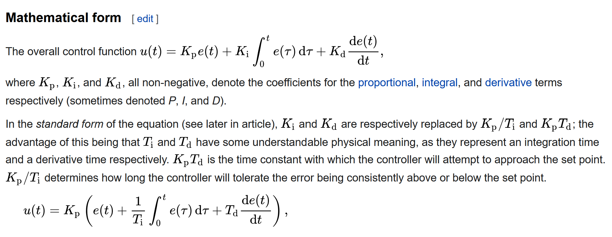
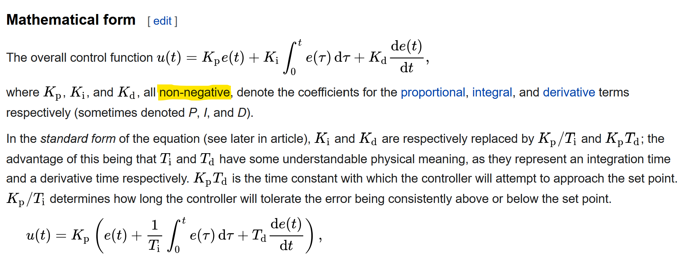

About Me
John McFarlane
Software Engineer, Jaguar Land Rover, Shannon, Ireland


johnmcfarlane.github.io/slides/2022-accu
Background
Work: games, servers, automotive
Fun: numerics, workflow, word games
WG21: low latency, numerics, contracts
all of these subjects have influenced my attitude towards run-time disappointment note: title was chosen before decision not to proceed with contracts for C++23!Contracts
Contract Programming in C++(20)
Alisdair Meredith, CppCon 2018
A contract is an exchange of promises between a client and a provider.
Disappointment
P0157R0: Handling Disappointment in C++
Lawrence Crowl, 2015
When a function fails to do what we want, we are disappointed. How do we report that disappointment to callers? How do we handle that disappointment in the caller?
Bugs and Errors
P0709R2: Zero-overhead deterministic exceptions: Throwing values
Herb Sutter, 2018
Programming bugs (e.g., out-of-bounds access, null dereference) and abstract machine corruption (e.g., stack overflow) cause a corrupted state that cannot be recovered from programmatically, and so they should never be reported to the calling code as errors that code could somehow handle.bugs and errors are different; that's very important; it's not always obvious which is which
Contracts
Types
- C++ API Contracts
- C++ Standard
- End User Contract
- Test User Contract
Attributes
- Agreement
- Client
- Provider
- (Client) Violation
I'll mostly talk about client violation.
Contract Attributes
| C++ API | standard | end user | test user | |
|---|---|---|---|---|
| agreement | docs | ISO/IEC 14882 | docs | docs |
| client | dev | dev | user | dev |
| provider | dev | implementer | dev | implementer |
| violation | bug | bug | error | error |
Contract Attributes
| C++ API | standard | end user | test user | |
|---|---|---|---|---|
| agreement | docs | ISO/IEC 14882 | docs | docs |
| client | dev | dev | user | dev |
| provider | dev | implementer | dev | implementer |
| violation | bug | bug | error | error |
Contract Attributes
| C++ API | standard | end user | test user | |
|---|---|---|---|---|
| agreement | docs | ISO/IEC 14882 | docs | docs |
| client | dev | dev | user | dev |
| provider | dev | implementer | dev | implementer |
| violation | bug | bug | error | error |
Contract Attributes
| C++ API | standard | end user | test user | |
|---|---|---|---|---|
| agreement | docs | ISO/IEC 14882 | docs | docs |
| client | dev | dev | user | dev |
| provider | dev | implementer | dev | implementer |
| violation | bug | bug | error | error |
Contract Attributes
| C++ API | standard | end user | test user | |
|---|---|---|---|---|
| agreement | docs | ISO/IEC 14882 | docs | docs |
| client | dev | dev | user | dev |
| provider | dev | implementer | dev | implementer |
| violation | bug | bug | error | error |
Contract Attributes
| C++ API | standard | end user | test user | |
|---|---|---|---|---|
| agreement | docs | ISO/IEC 14882 | docs | docs |
| client | dev | dev | user | dev |
| provider | dev | implementer | dev | implementer |
| violation | bug | bug | error | error |
End User Contract
- The exchange of promises between the user and developer of a software product.
- It's expected that the user may violate the contract.
- All people make mistakes.
- Some people are naughty!
- Such violations are errors.
- Errors should be handled by the program.
so let's talk about
Errors!
Errors
- arise from real-world unpredictability/unreliability
- are caused by real-world phenomena (such as humans), and
- are introduced through interfaces with the real world, e.g.:
std::filesystemandstd::stringare UI elements!std::chronomodels the real world and similarly 'messy'.
- Input is a major source of errors:
- command line, network traffic, files, input devices.
- are imperfections modelled within the system
*modelled* imperfections

Errors are things that can go wrong
- even in perfect programs.
crucially, you cannot fix the code to make the error go away
two main categories of error spring to mind
Examples of Errors
this is a personal list; I'd love to hear about other examples
resource
- missing/read-only file
- missing hardware device
- network address already in used
ill-formed input
- file too short
- file doesn't conform to format, e.g. JSON
- parameter is out of range
- unexpected device type
- unexpected network packet size
Error Handling
Error Handling
Recap: client violations of the End User Contract should be handled by the program
The user needs to know about them in order to decide what to do next.
The software must inform the user to this end.
$1,000,000 Question
How does your program handle errors?
$1,000,000 Answer
It depends.
It depends on the program
- Is your program batch or steady-state?
- Does your program have realtime constraints?
- Does your program respond through:
- a console,
- a GUI,
- a RESTful API,
- something else, or
- nothing at all?
- Is your program even a program, or reusable library?
Worse: it's really two questions: how to you signal errors and how to you describe them?
Choices, choices!
C++ has too many error-handling facilities.
But part of the problem is its versatility.
An important consideration is to allow for versatility.
Some Techniques for Simple Programs
-
Reporting:
- Log, e.g. print something helpful to `stderr`
- Exceptions
- Return values
- Abnormal program termination
Signalling:
Note that signalling an error it not itself an error. If some failure is propagated through the stack, it's only an error when it is passed to the user.
Best Advice For Error Handling...
Practice emotional code!
Care about the user. Try and imagine you're them. What would help you most?
Empathise.
Example 1: Print result, return success, log details
// print file's size or return false
auto print_file_size(char const* filename)
{
std::ifstream in(filename, std::ios::binary | std::ios::ate);
if (!in) {
std::cerr << std::format("failed to open file \"{}\"\n", filename);
return false;
}
std::cout << std::format("{}\n", in.tellg());
return true;
}
auto print_config_file_size()
{
if (!print_file_size("default.cfg")) {
// in this function, we know the nature of the file
std::cerr << "failed to print the size of the config file\n";
}
}
Very basic, but it's a start. Not much use though!
Example 2: Return result, ??? success, log details
// return file's size
auto file_size(char const* filename)
{
std::ifstream in(filename, std::ios::binary | std::ios::ate);
if (!in) {
std::cerr << std::format("failed to open file \"{}\"\n", filename);
// how is the disappointment returned now?
}
return in.tellg();
}
Structured binding can help a little. But unlike Python C++ only returns a maximum of one object.
Example 3: Return result or failure, log details
auto file_size(char const* filename)
-> std::optional<std::ifstream::pos_type>
{
std::ifstream in(filename, std::ios::binary | std::ios::ate);
if (!in) {
std::cerr << std::format("failed to open file \"{}\"\n", filename);
return std::nullopt;
}
return in.tellg();
}
`std::optional` may not be the best choice but it's readily available. This is starting to get complicated!
Example 4: Return result, abort on failure, log details
// error handler function
template <typename... args>
[[noreturn]] void fatal(args&&... parameters)
{
std::cerr << std::format(std::forward<args>(parameters)...);
std::abort();
}
int main(int argc, char* argv[])
{
auto const expected_num_params{3};
if (argc != expected_num_params) {
fatal("Wrong number of arguments provided. Expected={}; Actual={}\n", expected_num_params, argc);
return EXIT_FAILURE;
}
}
This is simple and optimally efficient in the happy path. But it's limited, doesn't scale.
Functions Are a Track Event
There are zero or more obstacles and one finish line.
auto do_something(auto param)
{
// hurdle 1
auto intermediate_thing1 = get_a_thing(param)
if (!intermediate_thing1) {
return failure;
}
// hurdle 2
auto intermediate_thing2 = get_another_thing(intermediate_thing1)
if (!intermediate_thing2) {
return failure;
}
// finish line
return intermediate_thing2;
}
Exceptions
- versatile/scalable
- very efficient normal path
- hide control flow
- exceedingly slow in exceptional path
- not always optimal in normal path
- hide control flow
Pros:
Cons:
Just one page, sorry. It's a big subject!
Contract Attributes
| C++ API | standard | end user | test user | |
|---|---|---|---|---|
| agreement | docs | ISO/IEC 14882 | docs | docs |
| client | dev | dev | user | dev |
| provider | dev | implementer | dev | implementer |
| violation | bug | bug | error | error |
Contract Attributes
| C++ API | standard | end user | test user | |
|---|---|---|---|---|
| agreement | docs | ISO/IEC 14882 | docs | docs |
| client | dev | dev | user | dev |
| provider | dev | implementer | dev | implementer |
| violation | bug | bug | error | error |
C++ API Contracts
- The exchange of promises between the developer(s) using and implementing a C++ API.
- Violations are bugs.
- Fixing bugs is as important as fixing compiler errors.
So let's talk about...
Bugs!
Bugs
A program with a bug:
- is incorrect
- contains undefined behaviour
- is vulnerable
- violates the End User Contract.
and again...
Example of Client C++ API Contract Violation
PID Controller
Example Bug: PID Controller
Contract from PID
en.wikipedia.org/wiki/PID_controller#Mathematical_form
Contract from PID
en.wikipedia.org/wiki/PID_controller#Mathematical_form
PID Controller (interface)
namespace pid {
struct components {
double proportional;
double integral;
double derivative;
};
// values kept constant throughout operation of a controller
struct parameters {
// non-negative factors used to generate PID terms
components k;
double dt;
};
struct state {
double integral;
double error;
};
struct input {
// desired value
double setpoint;
// actual value
double process_variable;
};
struct result {
// corrective value to apply to system
double correction;
// to pass in to next iteration as input::previous state
state current;
};
[[nodiscard]] auto calculate(parameters params, state previous, input in)
-> result;
}PID Controller (implementation)
#include "pid.h"
#include "pid_assert.h"
[[nodiscard]] auto pid::calculate(parameters params, state previous, input in)
-> result
{
PID_ASSERT(params.k.proportional >= 0);
PID_ASSERT(params.k.integral >= 0);
PID_ASSERT(params.k.derivative >= 0);
PID_ASSERT(params.dt > 0);
auto const error = in.setpoint - in.process_variable;
auto const next_integral{previous.integral + error * params.dt};
auto const derivative = (error - previous.error) / params.dt;
auto const terms{components{
.proportional = params.k.proportional * error,
.integral = params.k.integral * next_integral,
.derivative = params.k.derivative * derivative}};
auto const output = terms.proportional + terms.integral + terms.derivative;
PID_ASSERT(output == output);
return result{
output,
state{next_integral, error}};
}Contract Attributes
| C++ API | standard | end user | test user | |
|---|---|---|---|---|
| agreement | docs | ISO/IEC 14882 | docs | docs |
| client | dev | dev | user | dev |
| provider | dev | implementer | dev | implementer |
| violation | bug | bug | error | error |
Contract Attributes
| C++ API | standard | end user | test user | |
|---|---|---|---|---|
| agreement | docs | ISO/IEC 14882 | docs | docs |
| client | dev | dev | user | dev |
| provider | dev | implementer | dev | implementer |
| violation | bug | bug | error | error |
C++ Standard
- The exchange of promises between C++ developers and C++ implementers.
- The authors of the contract are WG21 - not necessarily the providers.
- Client violations are bugs.
- As with C++ API Contracts, violation is UB.
So I guess we're talking about...
More Bugs!
!
Bug or Error?
int f(int const* a, int b, int c) { int sum = 0; for (int i = b; i <= c; i ++) { sum += a[i]; } return sum; }Guidance: Simplicity
- Keep all your software simple and correct, including:
- Functional (production) code
- Automated tests
- Documentation
- Build system
- Avoid control flow, especially
ifstatements - Don't over-engineer or write abstractions you don't need (YAGNI)
Guidance: Coding Standards
- Commit to modern practices and conventions, e.g.:
- C++ Core Guidelines
- Modern CMake
- Linux-flavour Git commit descriptions
- Avoid control flow, especially
ifstatements - Don't over-engineer or write abstractions you don't need (YAGNI)